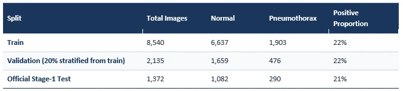
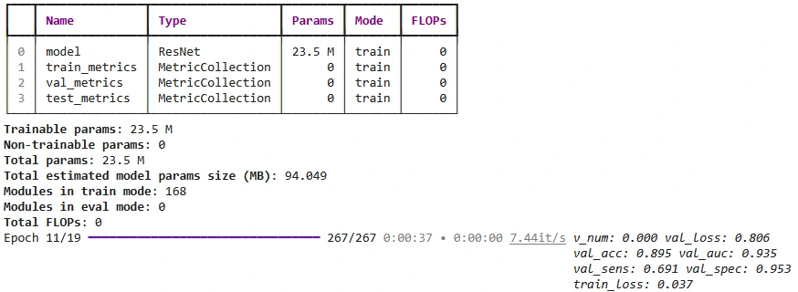
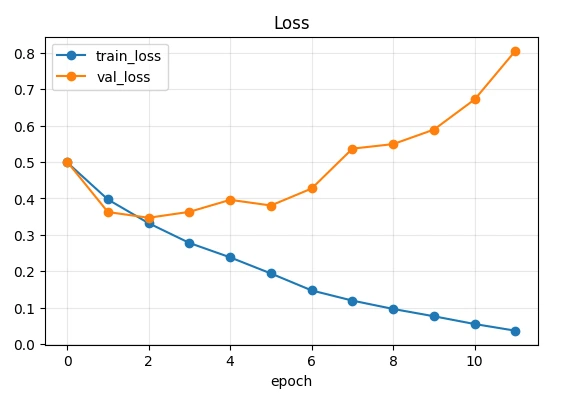
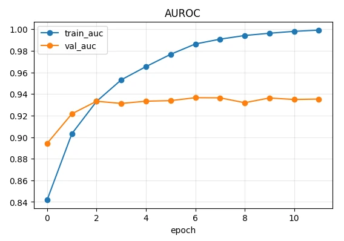
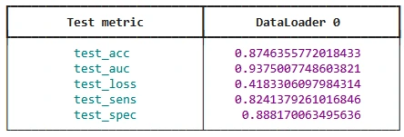
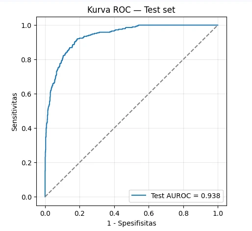

Portfolio Details






Pneumothorax Detection on Chest X-Rays with ResNet50
A binary classifier (normal vs. pneumothorax) for chest X-rays, deployed as a web application powered by ResNet50. Fine-tuned on 10,675 chest X-rays from the Kaggle SIIM-ACR Pneumothorax dataset, the model achieved an AUROC of 0.938 on the official test set (n = 1,372), with 86.2% sensitivity and 86.1% specificity.
Technical summary: from misleading baseline metrics to client-side web deployment.
This article summarizes the technical journey behind the results: from initial runs that looked "80% accurate" without actually learning, to a browser-based web app running the model locally.
What Is Pneumothorax?
Pneumothorax is the presence of air in the pleural cavity, causing the lung to collapse partially or completely. On a chest X-ray, the key sign is a thin visceral pleural line with an area lacking lung markings beyond it. Small pneumothoraces, especially at the lung apex or on supine anteroposterior (AP) views, are easily missed, even though tension pneumothorax can be life-threatening. Automated detection is therefore valuable as a triage tool to flag scans that need priority review.
Why ResNet50?
ResNet50 is a 50-layer convolutional neural network built on residual connections: shortcut paths that add a block's input to its output. This prevents vanishing gradients and allows deep networks to be trained effectively. With roughly 23.5 million parameters and widely available ImageNet pretrained weights, ResNet50 is a standard baseline for transfer learning in medical imaging.
Key Takeaway: Is ResNet50 sufficient for detecting pneumothorax? Yes. Performance differences across architectures on a dataset the size of SIIM are typically just a few AUROC points. The major breakthroughs in this project came from improving the data pipeline, evaluation metrics, and training strategy rather than switching architectures.
Dataset
The project uses the PNG version of the SIIM-ACR Pneumothorax dataset on Kaggle (vbookshelf). Each image measures 1024×1024 pixels and includes a pneumothorax segmentation mask. The train/test split follows the official Stage-1 list:
| Split | Total | Normal | Pneumothorax | Positive |
|---|---|---|---|---|
| Train | 8,540 | 6,637 | 1,903 | 22% |
| Validation (20% stratified from train) | 2,135 | 1,659 | 476 | 22% |
| Official Stage-1 Test | 1,372 | 1,082 | 290 | 21% |
Workflow
• 1. Data: Download PNGs (1024×1024) and CSV metadata via the Kaggle API.
• 2. Preprocessing: Resize images to 512×512, cache locally, and apply training augmentations.
• 3. Fine-Tune ResNet50: Train with weighted cross-entropy, the AdamW optimizer, and learning rates of 1e-4 (backbone) / 1e-3 (head).
• 4. Select Checkpoint: Pick the checkpoint with the highest validation AUROC (Epoch 6: 0.937).
• 5. Thresholding: Determine the optimal decision threshold via Youden's index on the validation set (0.315).
• 6. Test Evaluation: Evaluate once on the official test set (n = 1,372, AUROC 0.938).
• 7. ONNX Export: Export the model (~94 MB) outputting probabilities plus 16×16 Class Activation Maps (CAM).
• 8. Static Space Deployment: Run directly in the browser for free using ONNX Runtime Web.
The biggest hurdles were not architectural, but silent pitfalls that made the model appear to work when it was not learning. Early experiments plateaued at 67% and later 80% accuracy, and both numbers were misleading. The root causes:
1. Misleading Accuracy: About 79% of test images are normal, so predicting "normal" every time yields ~79% accuracy. An early 80% accuracy (test loss 0.48) was no better than guessing class proportions.
2. Class Imbalance: With only 22% positive cases, standard loss and label smoothing pushed predictions toward the majority class.
3. Underfitting: Training accuracy stalled at 0.848 (ResNet50 should reach ~100% on training data) due to a low backbone learning rate (1e-5 for 3 epochs) and heavy L2 weight decay (1e-2) in Adam.
4. Low Resolution: The visceral pleural line is razor-thin and disappears when downsampled to ResNet's default 224×224 resolution.
5. Overfitting: Early runs lacked data augmentation. Even after fixes, val_loss hit its minimum at Epoch 2 and climbed to 0.806 by Epoch 11 while train_loss dropped to 0.037.
6. Slow Data Pipeline: Re-opening H5 files per image (0.71 it/s) and decoding 1024×1024 PNGs on a 2-core Colab CPU bottlenecked training.
7. Chest Tube Shortcuts: Some positive SIIM cases already contain chest tubes, risking a model that detects tubes rather than pneumothorax.
8. Paid Deployment: Hugging Face blocked free CPU Gradio Spaces (Error 402), requiring a PRO subscription.
Solutions were applied in a strict order: first make sure the model actually learns, then address generalization and deployment.
• Misleading Accuracy: Replaced accuracy with AUROC, sensitivity, and specificity. Checkpoint selection and early stopping monitored val_auc instead of val_loss or accuracy.
• Class Imbalance: Used balanced class-weighted cross-entropy (normal: 0.643; pneumothorax: 2.244), removed label smoothing, used stratified splits, and tuned the threshold on validation data.
• Underfitting: Switched to AdamW (decoupled weight decay), increased learning rates (1e-4 backbone, 1e-3 head) with a cosine schedule, and trained for up to 20 epochs.
• Low Resolution: Increased input resolution to 512×512 from the original 1024×1024 images.
• Overfitting: Added training-only augmentations (±10° rotation, 5% translation, 0.9–1.1× scale, ±20% brightness/contrast), 0.3 dropout, and early stopping (patience = 5).
• Slow Data Pipeline: Switched to direct PNG reads via CSV, pre-resized and cached images at 512×512 for parallel loading, and downloaded data via the Kaggle API directly to Colab's local disk.
• Chest Tube Shortcuts: Unresolved; a subgroup analysis (with vs. without chest tubes) supported by CAM heatmaps is planned.
• Paid Deployment: Exported the model to ONNX and deployed it client-side in the browser using ONNX Runtime Web on a free Static Space.
Tuning the Threshold Without Retraining
While AUROC is threshold-independent, sensitivity and specificity depend heavily on the cutoff. The default 0.5 threshold is arbitrary and tends to produce low sensitivity on imbalanced datasets. Using Youden's index (sensitivity + specificity − 1) on the validation set yielded an optimal threshold of 0.315, which was then applied once to the test set to keep the evaluation unbiased.
The best checkpoint (Epoch 6, validation AUROC 0.937) achieved a test AUROC of 0.938 (n = 1,372; 290 pneumothorax cases; 21% prevalence). The close match between validation and test scores shows the model generalizes well rather than overfitting to the validation split.
| Threshold | Sens. | Spec. | PPV | NPV | Acc. | TP / FN / FP / TN |
|---|---|---|---|---|---|---|
| 0.500 | 82.4% | 88.8% | 66.4% | 95.0% | 87.5% | 239 / 51 / 121 / 961 |
| 0.315 (Youden, val) | 86.2% | 86.1% | 62.5% | 95.9% | 86.2% | 250 / 40 / 150 / 932 |
Lowering the threshold to 0.315 detects 11 additional positive cases at the cost of 29 extra false alarms, a favorable trade-off for clinical triage.
Limitations
• Probability Calibration: After Epoch 2, validation loss increased even as validation AUROC held steady at 0.93–0.94. This overfitting degrades calibration rather than discrimination: the model becomes overconfident, so predicted percentages do not reflect true probabilities. Temperature scaling on the validation set can fix this without affecting AUROC.
• Chest Tube Confounding: The exact impact of chest tubes on AUROC has not yet been quantified.
• Patient-Level Leakage: The PNG dataset lacks patient IDs, so potential patient overlap between train and test splits could not be verified.
• External Validation: The model has not been tested on local hospital data with different imaging protocols and patient demographics.
• Aspect Ratio Distortion: Images were resized directly to 512×512 without preserving aspect ratios, causing slight distortion on non-square X-rays.
• Not a Diagnostic Tool: This model is intended strictly for research and educational purposes.
Key Features
- Test AUROC 0.938 (n = 1,372)
- 86.2% Sensitivity, 86.1% Specificity
- High-Resolution 512×512 Input
- CAM Heatmap Visualization
- In-Browser Inference (ONNX Runtime Web)
- Free Static Deployment